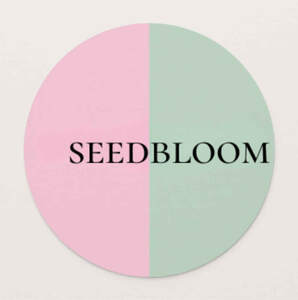

Trade Mark Journal No.2025/048 28 November 2025
UK00004295434 15 November 2025 (5,9,41,44)

- Class 5
- Dietary and nutritional supplements; Nutritional supplements; Dietary supplements; Dietary food supplements; Protein dietary supplements; Nutraceuticals for use as a dietary supplement; Flaxseed dietary supplements; Yeast dietary supplements; Lecithin dietary supplements; Mineral dietary supplements; Enzyme dietary supplements; Glucose dietary supplements; Wheat dietary supplements; Mineral nutritional supplements; Chlorella dietary supplements; Zinc dietary supplements; Dietary and nutritional preparations; Dietary supplements and dietetic preparations; Albumin dietary supplements; Casein dietary supplements; Liquid dietary supplements; Dietary supplements for infants; Alginate dietary supplements; Pollen dietary supplements; Liquid nutritional supplements; Dietary supplements for animals; Linseed dietary supplements; Dietary supplements consisting of vitamins; Dietary supplements for pets; Propolis dietary supplements; Dietary supplements for humans; Soy protein dietary supplements; Herbal dietary supplements for persons special dietary requirements; Whey protein dietary supplements; Dietary supplement drinks; Protein powder dietary supplements; Dietary food supplements used for modified fasting; Mineral dietary supplements for humans; Mineral dietary supplements for animals; Dietary supplements for medical use; Dietary supplements for controlling cholesterol; Soy isoflavone dietary supplements; Acai powder dietary supplements; Flaxseed oil dietary supplements; Nutritional supplements for veterinary use; Energy gels (dietary supplements); Folic acid dietary supplements; Brewer's yeast dietary supplements; Dietary supplements with a cosmetic effect; Health food supplements for persons with special dietary requirements; Nutritional supplements for livestock feed; Anti-oxidant food supplements; Nutritional supplement energy bars; Dietary supplements in powder form; Food supplements; Wheat germ dietary supplements; Dietary supplements promoting fitness and endurance; Dietary supplements and dietetic preparations containing CBD oil; Dietary supplement drink mixes; Dietary supplemental drinks; Vitamin supplements; Protein supplements; Vitamin and mineral food supplements; Linseed oil dietary supplements; Ground flaxseed fiber for use as a dietary supplement; Nutritional supplements consisting primarily of calcium; Food supplements for dietetic use; Probiotic supplements; Dietary supplements consisting primarily of calcium; Dietetic and nutritional preparations; Nutritional supplements consisting primarily of magnesium; Pine pollen dietary supplements; Calcium supplements; Nutritional supplements consisting of fungal extracts; Fiber (Dietary -); Dietary fiber; Dietary supplements consisting primarily of magnesium; Prebiotic supplements; Health food supplements made principally of vitamins; Vitamin preparations in the nature of food supplements; Dietary supplements for human beings; Fibre (Dietary -); Dietary fibre; Nutritional supplements consisting primarily of zinc; Anti-oxidant supplements; Royal jelly dietary supplements; Anti-oxidants for dietary use; Dietary supplements for humans not for medical purposes; Natural dietary supplements for treating claustrophobia; Vitamin and mineral supplements; Dietary supplements for pets in the nature of a powdered drink mix; Activated charcoal dietary supplements; Nutritional supplements made of starch adapted for medical use; Vitamin supplements for animals; Nutritional supplements consisting primarily of iron; Nutritional supplement meal replacement bars for boosting energy; Vitamin and mineral supplements for pets; Herbal supplements; Dietetic foods for use in clinical nutrition; Bee pollen for use as a dietary food supplement; Dietary supplements consisting primarily of iron; Powdered nutritional supplement drink mix; Dietary fiber to aid digestion; Homeopathic supplements; Liquid vitamin supplements; Food supplements for medical purposes; Medicated food supplements; Colostrum supplements; Powdered nutritional supplement energy drink mix; Calcium tablets as a food supplement; Protein supplements for animals; Dietary pet supplements in the form of pet treats; Food supplements for sportsmen; Health food supplements made principally of minerals; Health-aid foods supplements containing ginseng; Vitamin supplements for use in renal dialysis; Food supplements for veterinary use; Food supplements for non-medical purposes; Ganoderma lucidum spore powder dietary supplements; Powdered fruit-flavored dietary supplement drink mix; Nutritional additives to foodstuffs for animals, for medical purposes; Antibiotic food supplements for animals; Mineral supplements for feeding livestock; Dietary supplements for human beings and animals; Food supplements consisting of amino acids; Diet capsules; Liquid herbal supplements; Protein supplement shakes.
- Class 9
- Mobile apps; Wearable smartphones; Downloadable mobile applications for use with wearable computer devices; AI software; Software applications for use with mobile devices; Software applications for mobile devices; Software and applications for mobile devices; Downloadable applications for use with mobile devices; Downloadable applications for mobile devices; Programs for smartphones; Software for smartphones; Wearable smart phones; Downloadable software applications for mobile phones; Application software for mobile devices; Wearable computers; Smartphone software applications, downloadable; Smartphones; Smartwatches; Software for mobile phones; Augmented reality software for use in mobile devices; Application software for mobile phones; Wearable activity trackers; Wearable communications devices in the form of wristwatches; Fast chargers for mobile devices; Downloadable emoticons for mobile phones; Devices for hands-free use of mobile phones; Smartphone software; Computer game software for use on mobile devices; Computer application software for use with wearable computer devices; Chargers for smartphones; Wrist-mounted smartphones; Headsets for smartphones; Wearable digital electronic communication devices; Application software for wireless devices; Internet of Things [IoT] sensors; Computer software for mobile applications that enable interaction and interface between vehicles and mobile devices; Electronic game software for mobile phones; Computer hardware modules for use in electronic devices using the Internet of Things [IoT]; Downloadable mobile applications; Handheld computing devices; Software as a medical device [SaMD], downloadable; Mobile software; Application software for smart phones; Earphones for use with mobile telecommunication devices; Downloadable application software for smart phones; Wearable computer peripheral devices; Downloadable smart phone applications (software); Batteries for use with mobile telecommunication devices; Wireless headsets for smartphones; Computer application software for mobile phones; Electronic game software for wireless devices; Downloadable graphics for mobile phones; Display modules for mobile phones; Computer software for use on handheld mobile digital electronic devices and other consumer electronics; Chargers for mobile phones; Wearable portable media players; Computer software for mobile phones; Downloadable electronic game software for wireless devices; Multimedia devices; Wearable speakers; Watchbands that communicate data to smartphones; Augmented reality software for use in mobile devices for integrating electronic data with real world environments; Wireless headsets for mobile phones; Earphones for smartphones; Application software for smart TV; Mobile phones; Downloadable wallpapers for computers and phones; Telemetry devices for engine applications; Hands free devices for mobile-phones; Downloadable ringtones for mobile phones; Braille mobile phones; Video devices; Educational mobile applications; Keyboards for mobile phones; Software related to handheld digital electronic devices; Wearable computer peripherals; Software for mobile device management; Mobile device management software; Peripherals adapted for use with computers and other smart devices; Mobile computers; Wearable computer hardware; Keyboards for smartphones; Straps for mobile phones; Mobile application software; Middleware for management of software functions on electronic devices; Battery chargers for mobile phones; Computer game software for use on mobile and cellular phones; Batteries for mobile phones; Digital sensory devices; Networking devices; Computer hardware modules for use with the Internet of Things [IoT]; Machine-to-Machine [M2M] applications; Wireless headsets for smart phones; Displays for mobile phones; Wireless portable printers for use with laptops and mobile devices; Dashboard mats adapted for holding mobile telephones and smartphones; Electric mobile digital communication devices; Downloadable mobile applications for the management of data; Wristband computer devices; Dashboard mounts for mobile phones; Cameras for smartphones; Wireless headsets for tablet computers; Watchbands that communicate data to other electronic devices; Gimbals for smartphones; Downloadable software in the nature of a mobile application for playing games; Computer application software for use in implementing the Internet of Things [IoT]; Computer programs and software for image processing used for mobile phones; Home automation devices; Educational tablet applications; Cases for mobile phones; Digital media streaming devices; Downloadable emoticons for mobile telephones; Wearable monitors; Wearable displays; Computer hardware modules for use in Internet of Things electronic devices; Displays for smartphones; Mobile data receivers; Digital phones; Software for tablet computers; Downloadable software in the nature of a mobile application; Downloadable smart phone application software; GPS navigation devices; Display devices, television receivers and film and video devices; Touchscreen sensors; Downloadable computer software for blockchain technology; Joysticks adapted for smartphones; Application software for cloud computing services; Digital sensors; Downloadable software, namely virtual clothing for use in computer games; Smartphone battery chargers; Downloadable mobile applications for booking taxis; Carriers adapted for mobile phones.
- Class 41
- Online education services; Online academic library services; University education services; Online research library services; Online gaming services; Education; Online entertainment services; Academy services (Education -); Education academy services; Academy education services; Education services; Adult education services; Services of schools [education]; Education academy services for teaching art history; Educational services for providing courses of education; Online gambling services; Kindergarten services [education or entertainment]; Sports education services; Club education services; Adult education services relating to pharmacy; Online digital publishing services; On-line gaming services; Online casino services; Education academy services for teaching languages; Entertainment, education and instruction services; Providing information about online education; Provision of information relating to physical education via an online web site; Music education; Adult education services relating to banking; Organization of competitions [education or entertainment]; Competitions (Organization of -) [education or entertainment]; Organization of competitions for education or entertainment; Medical education services; Education services in the nature of courses at the university level; Online sports betting services; Computer education training services; Education, entertainment and sport services; Education services related to the arts; Adult education services relating to commerce; Education academy services for teaching acting; Training and education services; Education and training services; Provision of education on-line from a computer database or via the internet or extranets; Residential education courses; Adult education services relating to finance; Musical education services; Legal education services; Health education; Online interactive entertainment; Online computer game services; Education services relating to pharmacy; Education information services; Education and instruction services; Online reference library services; Management of education services; Management education services; English language education services; Vocational education and training services; Sporting education services; Organisation of competitions [education or entertainment]; Organisation of competitions (education or entertainment); Competitions (organisation of -) [education or entertainment]; Organisation of competitions for education or entertainment; Providing online courses of instruction; Vocational education; Organization of education competitions; Physical education services; Education services relating to business training; Provision of information on fitness training via an online portal; Business educational services; On-line game services; Education services relating to music; Primary education services; Education information; Education services provided via the metaverse; Adult education services relating to medicine; Education, entertainment and sports; On-line gambling services; Information (Education -); Providing online electronic publications; On-line publishing services; Provision of online training; Providing online training seminars; Education courses relating to the travel industry; Educational and teaching services; Consultation services relating to business education; Education services in the form of music television programmes; Education services relating to banking; Linguistic education and training services; Adult education services relating to management; Dietary education services; Providing continuing nursing education courses; Computer assisted education services; On-line entertainment; Providing continuing medical education courses; Career counseling [education]; Education services relating to the use of computers in business; Educational institute services; Distance learning services provided online; On-line casino services; Educational services provided by institutes of higher education; Education services relating to industry; Organisation of competitions [education and/or entertainment]; Education services relating to sports; Education services relating to yoga; Accreditation of educational services; Adult education services relating to law; Education services relating to commerce; Conducting educational support programmes for healthcare professionals; Technological education services; Educational services.
- Class 44
- Medical services; Health clinic services [medical]; Health resort services [medical]; Medical spa services; Medical and healthcare services; Health care consultancy services [medical]; Medical care services; Medical health assessment services; Medical counseling services; Medical clinic services; Clinic (Medical -) services; Clinic services (Medical -); Health clinic services; Health spa services; Medical treatment services; Health farm services [medical]; Medical counselling services; Nursing services (Medical -); Medical nursing services; Medical treatment services provided by a health spa; Medical diagnostic services; Medical consultancy services; Medical tele-reporting [medical services]; Medical imaging services; Dietetic counselling services [medical]; Medical evaluation services; Health center services; Healthcare services; Medical assistance services; Mental health services; Medical information services; Medical advisory services; Mobile medical clinic services; Technical consultancy services relating to medical health; Provision of medical services; Residential medical treatment services; Medical services in the field of diabetes; Advisory services relating to medical services; Medical analysis services; Residential medical advice services; Health centre services; Consulting services relating to health care; Services for the provision of medical care information; Health screening services; Mental health screening services; Tele-reporting (medical services); Health-care services; Medical services for treatment of the skin; Consultancy services relating to health care; Rental of medical and health care equipment; Medical services in the field of oncology; Home health care services; Services for the provision of medical facilities; Physician services; Provision of health care services; Advisory services relating to health care; Personality assessment services [mental health services]; Medical and healthcare clinics; Health assessment services; Animal healthcare services; Healthcare information services; Healthcare consultancy services; Medical services in the field of nephrology; Dental services; Mobile dental care services; Paramedical services; Beauty care services provided by a health spa; Healthcare advisory services; Individual medical counseling services provided to patients; Chiropractic services; Ultrasound services for medical purposes; Health hydro services; Medical screening services in the field of asthma; Veterinary services; Dental clinic services; Medical care and analysis services relating to patient treatment; Emergency assistance services in the medical field; Cosmetic body care services provided by health spas; Charitable services, namely providing medical services; Respite care services in the nature of nursing aid services; Consultancy and information services relating to medical products; Plant care services [horticultural services]; Medical testing services, namely, fitness evaluation; Human healthcare services; Lifestyle counseling and consultancy for medical purposes; Medical care; Dermatology services; Managed health care services; Sports medicine services; Health screening services in the field of asthma; Information services relating to health care; Medical services for the treatment of skin cancer; Veterinary surgical services; Medical screening services relating to cardiovascular disease; Pharmaceutical services; Medical analysis services relating to the treatment of patients; Nursing care services; Medical counseling; Advisory services relating to health; Health advice and information services; Medical treatment services provided by clinics and hospitals; Psychiatric services; Beauty care services; Pharmacy services.
Nora Fakiri